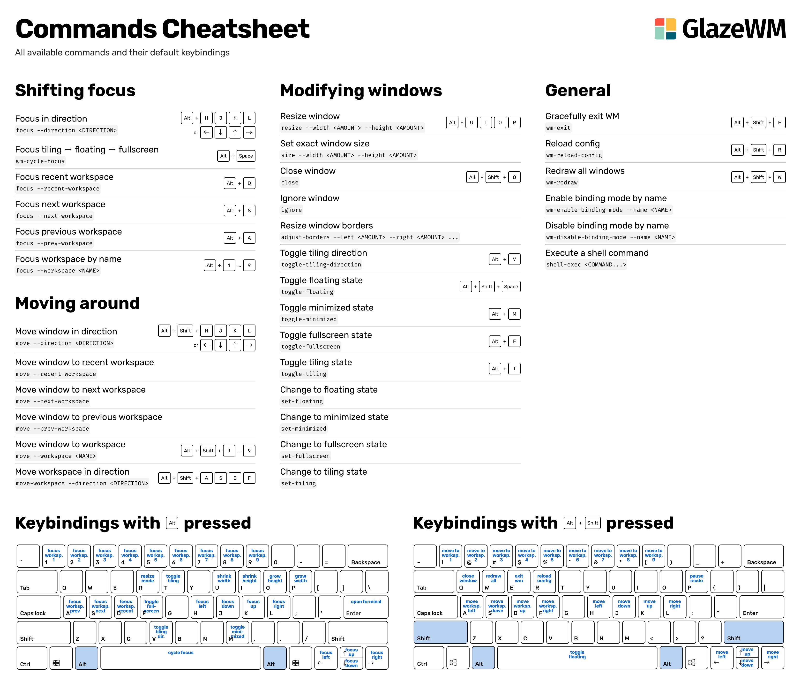

〇、引言
近日使用Hyprland，逐渐熟练后对Hyprland的顺畅体验感与快捷键主导的方便赞叹不已，但是苦于使用Linux用户过少，传教不便，因此在广泛查找后找到两个Windows的WM项目。
Windows的DE对终端用户十分不友好，因此能一步调出终端的快捷键是十分必要的。刷上WM后再加入Hypr Chan壁纸[*]，能在Windows体验到三倍的爽感(指1.Adobe&Office 2.终端快捷键 3.不一样的新奇体验)。
一、工具介绍
1. GlazeWM
项目地址：Github
优点：直接与DWM挂钩，速度快，快捷键CheatSheet直接可查[*]，与Hyprland键位(除主键从Super变为Alt外)高度相似，可以直接下载Release替代终端下载。
缺点：需要花费一定时间适应快捷键，入门不查找CheatSheet容易吓腿坑
类似：Archlinux + Hyprland
2. Komorebi
项目地址：Github
优点：维护更新速度及时，Github似乎有很多dotfiles美化[*]可选，不完全WM新手友好
缺点：CheatSheet隐蔽，相较GlazeWM不与DWM挂钩可能慢一些
类似：Ubuntu
二、安装教程
此处应直接查找官网文件（Blogger并非Windows用户），给出官方Installation网址，直接按教程安装即可；推荐Winget方式安装。
下方提供官方教程，只需要打开Powershell复制粘贴指令即可(或者GlazeWM可以直接下Release)
1. GlazeWM安装
官方教程：GitHub - glzr-io/glazewm: GlazeWM is a tiling window manager for Windows inspired by i3wm.
Installation
The latest version of GlazeWM is downloadable via releases. Zebar can optionally be installed as well via a checkbox during installation.
GlazeWM is also available through several package managers:
Winget
Chocolatey
Scoop
2
scoop install extras/glazewm
2.Komorebi
官方教程：Installation - Komorebi
Installation
Winget
2
winget install LGUG2Z.whkdScoop
- First add the extras bucket
- Then install the
komorebiandwhkdpackages usingscoop install
Once komorebi is installed, proceed to get the example configurations.
三、入门使用
WM（Windows Manager）是一种没有桌面的平铺式管理器，适合认为鼠标在Docker栏点图表费时费力、习惯同时运行成堆软件的用户。因此
WM十分注重快捷键的使用、窗口间的切换。
GlazeWM CheatSheet
Komorebi Cheatsheet
暂无图片，可查找官方Wiki学习
四、标注部分
- Hypr Chan壁纸 :目前已删库(考古发现为有用户于Discord发牢骚认为二次元壁纸看着不专业)，但是查找古早分支仍有遗迹残留详见Github
- 已在Part3给出
- 官方有给出许多Themes[Example configurations - Komorebi](Example configurations - Komorebi)
五、HyprChan
最后放两张HyprChan壁纸（8K）